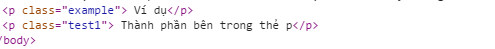
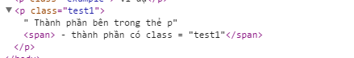

Cách sử dụng và demo Category: CSS trong jquery
1- .addClass(): tương tự với phương thức .addClass() của Attributes
.addClass() là phương thức thêm vào một hay nhiều class cho một thành phần HTML nào đó.
2- .css():
- Được dùng để thêm một hoặc nhiều style cho thành phần.
- Ngoài ra còn có thể sử dụng .css() để lấy giá trị style của thành phần.
Ví dụ: Get the background color of a clicked div.
3- .hasClass('name_class')
- Xác định thành phần có chứa class nhất định nào đó hay không.
Ví dụ
Thành phần bên trong thẻ p
| Trước khi có Jquery |
Sau khi có Jquery |
|  |
 |
4- .height()
Xác định hoặc gán giá trị chiều cao (height) cho thành phần.
Ví dụ 1: Xác định giá trị chiều cao của thành phần.
Thành phần bên trong thẻ div
Ví dụ 2: Gán giá trị chiều cao cho thành phần.
Gán giá trị height cho thẻ div là 100px
5- .width()
- Xác định hoặc gán giá trị chiều rộng (width) cho thành phần.
Ví dụ: tương tự phương thức .height()
6- innerHeight()
- Lấy giá trị chiều cao của thành phần phù hợp, chiều cao này không bao gồm border hay margin.
Ví dụ
- Thành phần li 1
- Thành phần li 2
- Thành phần li 3
Thành phần ul cao: px
7- .innerWidth()
Lấy giá trị chiều rộng của thành phần phù hợp, chiều cao này không bao gồm border hay margin.
8- .offset()
Lấy tọa độ hiện tại của thành phần đầu tiên, hoặc thiết lập các tọa độ của từng thành phần trong tập hợp các thành phần phù hợp liên quan đến văn bản.
Ví dụ
Thanh phan ben trong the div
Toa do cua class = "toado": ()
Ví dụ 2: Khi click vào button, ta đã cộng thêm vào 10px của tọa độ x và y với thành phần đầu tiên.
thanh phan p1
thanh phan p2
9- .outerHeight()
- .outerHeight(): Lấy giá trị chiều cao của thành phần phù hợp, chiều cao này bao gồm border, padding.
- .outerHeight(true): sẽ cộng thêm thành phần margin nếu có thêm tùy chọn "true".
10- .outerWidth()
.outerWidth(): Lấy giá trị chiều rộng của thành phần phù hợp, chiều rộng này bao gồm border, padding.
.outerWidth(true): sẽ cộng thêm thành phần margin nếu có thêm tùy chọn "true".